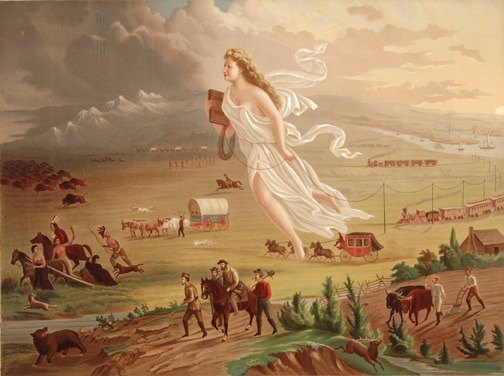

1
In Plotinus's work, episteme is closely associated with which of the following?
Choose one answer.
| a. Techne | ||
| b. Experimentation | ||
| c. Imitation of nature | ||
| d. Nous |
Question
2
In Roman deep mining, what was a gallery?
Choose one answer.
| a. A means of draining water from mines | ||
| b. The outside opening into a mine | ||
| c. A hoisting device | ||
| d. A horizontal tunnel near the ore |
Question
3
Roman concrete was composed of water, a binding agent, and which of the following?
Choose one answer.
| a. Metal | ||
| b. Aggregate | ||
| c. Volcanic dust | ||
| d. Mud |
Question
4
What was the function of the Pantheon?
Choose one answer.
| a. To serve as a place of worship | ||
| b. To demonstrate the connection between the imperial family and all the gods | ||
| c. To store grain for the city | ||
| d. To house sporting events for the populace |
Question
5
What was the major Roman method for lighting in underground mining?
Choose one answer.
| a. Carrying torches | ||
| b. Opening shafts for sunlight | ||
| c. Using oil lamps | ||
| d. Lighting bonfires |
Question
6
Which civilization built the bridge in the image below?

Choose one answer.
| a. Ancient Roman | ||
| b. Ancient Greek | ||
| c. Medieval European | ||
| d. Medieval Chinese |
Question
7
Which of the following statements about Roman architecture is true?
Choose one answer.
| a. Roman architects incorporated arches, vaults, and domes. | ||
| b. Roman architects built massive pyramids. | ||
| c. Roman architects stressed harmonious proportions above all. | ||
| d. Roman architects built great cathedrals. |
Question
8
Which of the following statements about Roman roads is false?
Choose one answer.
| a. Roman roads made frequent turns. | ||
| b. Roman soldiers relied heavily on the roads. | ||
| c. Surveyors determined the road's direction. | ||
| d. Roman roads were built with consideration for water drainage. |
Question
9
Which of the following statements concerning Roman methods of mine drainage is false?
Choose one answer.
| a. They constructed adits to drain mines. | ||
| b. They used steam pumps to drain mines. | ||
| c. They used waterwheels underground to drain mines. | ||
| d. They used Archimedean screws to drain mines. |
Question
10
Aristotle would agree with which of the following statements?
Choose one answer.
| a. Techne is craft knowledge. | ||
| b. Techne includes experimentation. | ||
| c. Techne is scientific knowledge. | ||
| d. Techne is unchanging truth. |
Question
11
Al-Khwarizmi was a mathematician of the House of Wisdom. What innovation did Al-Khwarizmi's The Book of Addition and Subtraction According to the Hindu
Calculation introduce into the Arabic world?
Choose one answer.
| a. Geometry | ||
| b. Roman numerals | ||
| c. The abacus | ||
| d. Zero and decimal places |
Question
12
In 1391, Geoffrey Chaucer wrote a book to his son, Lewis, on which subject?
Choose one answer.
| a. How to turn lead into silver | ||
| b. How to use a sundial | ||
| c. Roman engineering | ||
| d. How to make and use an astrolabe |
Question
13
The House of Wisdom specialized in Arabic translations of scientific texts, especially from which of the following languages?
Choose one answer.
| a. Greek | ||
| b. Latin | ||
| c. Hebrew | ||
| d. Chinese |
Question
14
What gave the Mongols technological superiority in battle?
Choose one answer.
| a. Using cannons on the battle field | ||
| b. Shooting bows and arrows on horseback | ||
| c. Using sling shots | ||
| d. Using lances on horseback |
Question
15
What is the first step in using an astrolabe?
Choose one answer.
| a. Move the rete. | ||
| b. Focus the telescope on the moon. | ||
| c. Select a star, and determine its altitude. | ||
| d. Lay the device flat on the ground. |
Question
16
Which of the following is a fair definition of alchemy?
Choose one answer.
| a. A form of magic that never existed | ||
| b. An early form of chemistry concerning such things as alcohol and gunpowder | ||
| c. A means of surveying | ||
| d. A method of iron production |
Question
17
Which of the following is a fair description of Zheng He's voyages?
Choose one answer.
| a. He explored no farther than Southeast Asia. | ||
| b. He made it to Hormuz in the Persian Gulf in his final voyage. | ||
| c. He crossed the Indian Ocean and explored the coast of Africa. | ||
| d. He rounded the African continent and entered the Atlantic Ocean. |
Question
18
Which of the following was an Arabic contribution to mathematics?
Choose one answer.
| a. Geometry | ||
| b. Calculus | ||
| c. Trigonometry | ||
| d. Addition |
Question
19
Which of the following was NOT a clear Chinese influence on the West?
Choose one answer.
| a. The use of gunpowder in cannons | ||
| b. The process of making paper | ||
| c. The process of preparing gunpowder | ||
| d. Block printing |
Question
20
What invention is credited to Pe Cheng sometime in the 1040s AD?
Choose one answer.
| a. Paper | ||
| b. Printing Press | ||
| c. Gunpowder | ||
| d. Moveable type |
Question
21
What is the best definition of the social and political system, manorialism?
Choose one answer.
| a. Village-level communism | ||
| b. Rule of a king or queen | ||
| c. A set of relationships between lords and serfs | ||
| d. The rule of a powerful few |
Question
22
What is the most controversial claim made by Lynn White concerning the influence of the stirrup on medieval life?
Choose one answer.
| a. Metal smiths were capable of fashioning stirrups. | ||
| b. The Mongols invented the stirrup. | ||
| c. The stirrup was strong enough to support a knight in armor. | ||
| d. The stirrup promoted feudalism. |
Question
23
What was the putting-out system in medieval textiles?
Choose one answer.
| a. When a merchant acted as middleman between wool supplier and weaver | ||
| b. The system of loaning weavers capital | ||
| c. Organizing the machines in factories | ||
| d. Long-distance wool trade with India |
Question
24
Which engineering challenge motivated Gothic innovations?
Choose one answer.
| a. How to build taller, larger cathedrals | ||
| b. How to build cathedrals out of marble | ||
| c. How to build cathedrals out of cement | ||
| d. How to build cathedrals on river beds |
Question
25
Which of the following best characterizes the relation between women and men in the crafts prior to the dominance of guilds?
Choose one answer.
| a. Women had little role in the crafts. | ||
| b. The shop owners kept their wives out of public view. | ||
| c. Shop owners and their wives could work together to maintain a shop. | ||
| d. Women could not learn the trade of their husbands. |
Question
26
Which of the following buildings features elaborate stained glass windows?
Choose one answer.
| a. The Pantheon | ||
| b. A medieval shop | ||
| c. The Tower of Pisa | ||
| d. Chartres Cathedral |
Question
27
Which of the following is NOT featured at Notre Dame Cathedral?
Choose one answer.
| a. Flying buttresses | ||
| b. Pointed arches | ||
| c. Stained glass windows | ||
| d. Stone barrel vault |
Question
28
Which of the following was a major function of a guild?
Choose one answer.
| a. To organize worship | ||
| b. To promote free market competition between producers | ||
| c. To regulate the production, standards, and marketing of a craft or trade | ||
| d. To defend workers from factory owners |
Question
29
Why is Cennini's "The Craftsman's Handbook" a primary source?
Choose one answer.
| a. Because artists use it today | ||
| b. Because it dates to the 14th century | ||
| c. Because it is about painting | ||
| d. Because it was written in Italian |
Question
30
Which of the following best characterizes the innovation introduced to the plow in medieval Europe?
Choose one answer.
| a. Plows were made heavy with a moldboard. | ||
| b. Slaves pulled the plows. | ||
| c. Plows were mechanized. | ||
| d. Plows were put on wheels. |
Question
31
In 1713, Peter the Great of Prussia commanded an army of over 300,000 men, fitted with the latest gunpowder technologies, and Prussia had one of the
largest state bureaucracies in Europe. What does this say about the Military Revolution thesis?
Choose one answer.
| a. The Military Revolution thesis should be revised to account for Prussia. | ||
| b. The Military Revolution thesis may be true. | ||
| c. The Military Revolution thesis is false. | ||
| d. Large armies do not require substantial state backing. |
Question
32
The Military Revolution theory claimed to explain why Spain lost military supremacy in Europe. Issuing a revision to the theory, what did Geoffrey Parker
argue?
Choose one answer.
| a. Spain's "outdated" tactics remained influential throughout the 17th century. | ||
| b. Spain never competed well against better developed states. | ||
| c. Spain adopted many French military innovations. | ||
| d. Spain was the first kingdom to employ cannon on the battlefield. |
Question
33
What is the technological function of the lantern that sits atop the Florence Cathedral Dome?
Choose one answer.
| a. To press down on the structure | ||
| b. To house a fog light for ships | ||
| c. To store building machines | ||
| d. To allow air to ventilate the building |
Question
34
What made the caravel ideal for exploration?
Choose one answer.
| a. The caravel's large size could withstand heavy waves. | ||
| b. The caravel was small, light, and could sail into the wind. | ||
| c. The caravel's large size could accommodate many soldiers. | ||
| d. The caravel's steel rudder was highly durable. |
Question
35
What was the explorer Balboa's major accomplishment?
Choose one answer.
| a. He baptized hundreds of natives. | ||
| b. He found gold and silver among the Aztecs. | ||
| c. He discovered Cuba and Hispaniola. | ||
| d. He crossed the Isthmus of Panama, suggesting a new route to the East. |
Question
36
When proposing his plans for the Florence Cathedral Dome, why did Brunelleschi present an egg?
Choose one answer.
| a. To demonstrate the color of his proposed dome | ||
| b. To symbolize his displeasure at having lost the competition for the Baptistery doors | ||
| c. Because the Medici enjoyed eating eggs | ||
| d. To demonstrate the shape of his proposed structure |
Question
37
Which of the following best characterizes Da Vinci's career?
Choose one answer.
| a. He was a rebel without an institutional base. | ||
| b. He always placed painting ahead of engineering in importance. | ||
| c. He continually attempted to serve noble patrons. | ||
| d. He never managed to remove himself from the world of common artisans. |
Question
38
Which of the following best characterizes Renaissance architect Alberti's estimation of prior architects?
Choose one answer.
| a. He sought to begin anew without consideration for prior architects. | ||
| b. He rejected most classical learning and built on medieval examples. | ||
| c. He revived classical architects like Vitruvius. | ||
| d. He revived medieval architects like Abbot Suger. |
Question
39
Which of the following best defines the invention of moveable type?
Choose one answer.
| a. Likely invented first in Korea, Gutenberg independently developed a similar process. | ||
| b. Gutenberg first invented the process after having traveled to China. | ||
| c. Gutenberg's assistant invented it, but as the master, Gutenberg took credit for inventing moveable type. | ||
| d. Gutenberg stumbled upon the invention while printing the Bible. |
Question
40
Which of the following best describes Gutenberg's moveable type?
Choose one answer.
| a. Wooden blocks | ||
| b. Reusable wooden pieces | ||
| c. Reusable metallic pieces | ||
| d. A mechanical printing press |
Question
41
Which of the following statements concerning the Columbian Exchange is true?
Choose one answer.
| a. The New World had more large mammals. | ||
| b. Columbus introduced the IIama into the New World. | ||
| c. The Old World had more large mammals. | ||
| d. The horse was native to the New World. |
Question
42
What social status did most artists have prior to Da Vinci?
Choose one answer.
| a. Prior to Da Vinci, most artists were nobility. | ||
| b. Prior to Da Vinci, most artists were lower-class artisans. | ||
| c. Prior to Da Vinci, most artists were wealthy but lower than nobility. | ||
| d. Prior to Da Vinci, most artists were regarded like kings and queens. |
Question
43
How did Galileo come to discover the satellites (moons) of Jupiter?
Choose one answer.
| a. Through pendulum experiments | ||
| b. By understanding the effects of gravity | ||
| c. After dropping balls from the Tower of Pisa | ||
| d. By using a 20-powered telescope |
Question
44
In a Watt steam engine, what force moves the piston down the cylinder?
Choose one answer.
| a. Expanding air | ||
| b. Human-powered cranks | ||
| c. A waterwheel | ||
| d. A vacuum |
Question
45
Industrial society had many critics. Who were the Luddites?
Choose one answer.
| a. Marxist theorists teaching at Oxford | ||
| b. Craftsmen who destroyed textile machines | ||
| c. Wives of cotton factory workers | ||
| d. Miners who went on strike |
Question
46
Robert Boyle once said that nature was "a great piece of clock-work". He was essentially defining which of the following?
Choose one answer.
| a. A mechanical philosophy | ||
| b. Aristotle's philosophy | ||
| c. Copernicus's conception of the universe | ||
| d. The Industrial Revolution |
Question
47
To whom would Roman Catholics of the 17th century most likely turn to in order to confirm or deny Galileo's discoveries?
Choose one answer.
| a. Members of the Royal Society of Science | ||
| b. Monks of the Augustinian order | ||
| c. Jesuits of the Collegio Romano | ||
| d. Oxford University |
Question
48
What did the Darby family build to demonstrate the superiority of cast iron produced with coke?
Choose one answer.
| a. A bridge | ||
| b. A carriage | ||
| c. A steam engine | ||
| d. A printing press |
Question
49
What effect did new industrial society have on families and women?
Choose one answer.
| a. The family could run a small factory from the home. | ||
| b. Women more often stayed at home, which was now distinct from work. | ||
| c. Women would care for children in the factory environment. | ||
| d. Working class families quickly enjoyed the benefits of industrial society. |
Question
50
What was Newton's major contribution to the Scientific Revolution?
Choose one answer.
| a. He founded the Royal Society of Science. | ||
| b. He developed a mathematical explanation of bodies in motion from planets to falling apples. | ||
| c. He was the first to publicly support Copernicus. | ||
| d. He wrote in a style accessible to a wide audience. |
Question
51
Which of the following innovations in production did not catch on in France but revolutionized the US gun-making industry?
Choose one answer.
| a. The division of labor | ||
| b. Steam-powered machines | ||
| c. Interchangeable parts | ||
| d. Employing women and children at low wage |
Question
52
Which of the following was one of the earliest events to spark the Industrial Revolution?
Choose one answer.
| a. The invention of the steam train | ||
| b. Organization of spinning and weaving in factories | ||
| c. New farming technologies and a boom in agricultural productivity | ||
| d. More humane labor laws |
Question
53
Why did Galileo study the swinging of a pendulum?
Choose one answer.
| a. To determine the speed of the earth's rotation | ||
| b. To prove the Copernican system | ||
| c. To understand the mechanics of motion | ||
| d. To understand Aristotle's theories |
Question
54
Why did Pope Urban VIII condemn Galileo's "Dialogue Concerning the Two Chief World Systems, Ptolemaic and Copernican" (1632)?
Choose one answer.
| a. Galileo made the representative of medieval cosmology a fool. | ||
| b. Galileo claimed that everything in the Bible was wrong. | ||
| c. Galileo was sympathetic to Ptolemy. | ||
| d. Galileo failed to include the voice of the Pope. |
Question
55
Which of the following was a strategy that Copernicus used to avoid confrontation with religious authorities in his day?
Choose one answer.
| a. He did not dedicate any of his work to the Pope. | ||
| b. He tutored leading religious figures in astronomy. | ||
| c. He found passages in the Bible that suggested the earth moved around the sun. | ||
| d. In the preface to his major work, he stated it was intended only for mathematicians. |
Question
56
In "Tools of Empire", Daniel Headrick considers the use of steamers part of the "penetration phase" of empire. What does this mean?
Choose one answer.
| a. Steam ships became a part of the culture of subjugated nations. | ||
| b. Steam ships transported thousands of British soldiers to the coast of Africa. | ||
| c. Steam ships lay the first Trans-Atlantic cable. | ||
| d. Steam ships allowed imperialists to move deeper into foreign territories. |
Question
57
The following image features the phrase, "Lightening the White Man's Burden". What is the "burden"? ( Note: This image is courtesy of the Library of
Congress, and the original can be found at )

Choose one answer.
| a. The cost of shipping soap | ||
| b. The difficulty of keeping sailors healthy | ||
| c. The difficulty of getting natives to work | ||
| d. The white man's belief that he needed to civilize the natives |
Question
58
What is the best interpretation of the steam trains featured in Gast's "American Progress", shown below?

Choose one answer.
| a. It was necessary to lay track on flatland rather than mountainous. | ||
| b. Steam power would render the work of the farmers in the foreground obsolete. | ||
| c. Technologies of imperialism clear the West of Indians and buffalo. | ||
| d. Advances in steam technology lagged behind advances in telegraphy. |
Question
59
What was Colombia's reaction to American plans to build the Panama Canal?
Choose one answer.
| a. Colombia encouraged Panama's uprising. | ||
| b. Colombia rejected American plans and sought a more lucrative deal. | ||
| c. Colombia declared war on the US. | ||
| d. Colombia allied with the Panamanians against the US. |
Question
60
What was the purpose of Matthew Perry's mission to Japan?
Choose one answer.
| a. To force the Japanese to trade with the US | ||
| b. To demonstrate the usefulness of the Panama Canal | ||
| c. To build railroads | ||
| d. To test the efficiency of coal-powered steam ships |
Question
61
What was the significance of the Panama Canal to Roosevelt's foreign policy?
Choose one answer.
| a. He wanted to force the French out of Panama. | ||
| b. He wanted to expand the Navy and increase its presence in the Pacific Ocean. | ||
| c. He wanted to strengthen Colombia. | ||
| d. He was preparing to attack Japan. |
Question
62
Which of the following was NOT a major impact of the Transcontinental Railroad on the Plains Indians?
Choose one answer.
| a. The Transcontinental Railroad interrupted Indian irrigation systems. | ||
| b. The Transcontinental Railroad disrupted buffalo migration patterns. | ||
| c. The Transcontinental Railroad brought more white settlement to Indian lands. | ||
| d. White buffalo hunters could travel easily to the Plains. |
Question
63
Why did Britain operate 75% of the telegraph lines in the world in 1914?
Choose one answer.
| a. To maximize profits | ||
| b. To showcase advanced technology to the world | ||
| c. To better communicate with its vast colonial holdings | ||
| d. To get ahead of the Germans, who had neglected to maintain the infrastructure it built |
Question
64
Why did some Japanese representations of Matthew Perry's ships feature eyes on the ships?
Choose one answer.
| a. The Japanese believed the ships were alive. | ||
| b. The Japanese were suggesting that the Americans were monstrous or barbaric. | ||
| c. The cannons on board resembled eyes. | ||
| d. Perry had eyes painted on his warships. |
Question
65
In Lewis Henry Morgan's three stages of social evolution, which stage involved the practice of animal domestication?
Choose one answer.
| a. Savagery | ||
| b. Barbarism | ||
| c. Civilization | ||
| d. Rational |
Question
66
How did electric companies promote electrical appliances for the home in the 1920s?
Choose one answer.
| a. By showcasing the wonders of electric cars | ||
| b. By depicting Thomas Edison surrounded by electrical appliances | ||
| c. By targeting women in articles, magazines, and exhibitions | ||
| d. By showing how easily men could use the new appliances |
Question
67
What is the best definition of a socio-technical system?
Choose one answer.
| a. A network of human and non-human actors | ||
| b. A union of hardware, software, physical surroundings, and people | ||
| c. A means of processing complex data | ||
| d. A means of communicating over long distances |
Question
68
What is the best definition of the applied science, thermodynamics?
Choose one answer.
| a. The science of motion | ||
| b. The science of chemical reactions | ||
| c. The science of atomic reactions | ||
| d. The science of heat |
Question
69
Which industry contributed most to Germany's economic development between roughly 1900 and 1913?
Choose one answer.
| a. Rubber | ||
| b. Cotton | ||
| c. Electrical | ||
| d. Iron |
Question
70
Which metal replaced dependence upon wrought iron during the Second Industrial Revolution?
Choose one answer.
| a. Copper | ||
| b. Aluminum | ||
| c. Steel | ||
| d. Tin |
Question
71
Which of the following best characterizes Germany's role in the Second Industrial Revolution?
Choose one answer.
| a. Britain surpassed Germany in industrial production. | ||
| b. Germany accounted for 90 percent of world industrial production. | ||
| c. Germany excelled in metallurgy but not in chemical and electrical industries. | ||
| d. Germany surpassed Britain in industrial production. |
Question
72
Which of the following best describes scientific management?
Choose one answer.
| a. The keeping of accurate time clocks for all shifts | ||
| b. The application of time and motion studies to increase worker efficiency | ||
| c. The computerization of management tasks | ||
| d. The analysis of managers' behaviors to increase their efficiency |
Question
73
Which of the following best describes the place of the internal combustion engine (ICE) in the American automobile industry in 1900?
Choose one answer.
| a. The ICE had already replaced battery power. | ||
| b. The ICE had replaced battery power but not steam power. | ||
| c. There were still more steam- and battery-powered cars than gas-powered cars. | ||
| d. Ford's Model T (ICE) already dominated the market. |
Question
74
Which of the following was NOT a component of the telephonic socio-technical system of the late 19th century?
Choose one answer.
| a. Female operators | ||
| b. Telephone wiring | ||
| c. AT&T | ||
| d. The telegraph |
Question
75
Which of the following was NOT a technological innovation of the Second Industrial Revolution?
Choose one answer.
| a. The use of coke in iron smelting | ||
| b. The Bessemer Process of steel production | ||
| c. The electric generator | ||
| d. The internal combustion engine |
Question
76
Which of the following was NOT an application of electrical theory during the Second Industrial Revolution?
Choose one answer.
| a. The steam engine | ||
| b. Electric cars | ||
| c. The generator | ||
| d. The telegraph |
Question
77
Why did Standard Oil Company come before the Supreme Court of the United States in 1911?
Choose one answer.
| a. The company had drilled on lands illegally. | ||
| b. The company had monopolized and restrained trade. | ||
| c. The company had charged the US government with interfering in its business. | ||
| d. The company had contracted overseas illegally. |
Question
78
At their meeting in Moscow in 1959, why did President Nixon insist that Premiere Khrushchev watch a recording on color television?
Choose one answer.
| a. Nixon wanted to attract a wider audience. | ||
| b. Nixon wanted to show how Americans had improved Soviet technologies. | ||
| c. Nixon wanted to be sure that the Soviets did not censure the president's words. | ||
| d. Nixon wanted to show how capitalism improved domestic life. |
Question
79
In his letter to President Roosevelt of 1939, what was Albert Einstein's major concern, which influenced the president and led to the Manhattan Project?
Choose one answer.
| a. It was morally wrong to drop an atomic bomb on Japan. | ||
| b. He urged the president to keep university research separate from wartime needs. | ||
| c. His theories should not be used by government physicists. | ||
| d. Germany might be working on an atomic weapon. |
Question
80
On April 22, 1915, German meteorologists ordered that valves be opened on 6,000 cylinders near the trenches. What happened next?
Choose one answer.
| a. The French put forth a cease-fire ordinance. | ||
| b. The Allies bombed the German cylinders before they opened. | ||
| c. Mustard gas killed thousands of German soldiers. | ||
| d. Chlorine gas drifted toward the French line. |
Question
81
What did Enrico Fermi accomplish at the University of Chicago in 1942?
Choose one answer.
| a. He produced highly enriched uranium. | ||
| b. He produced the first nuclear chain reaction. | ||
| c. He produced the first nuclear bomb. | ||
| d. He convinced the physics department to discontinue research on uranium. |
Question
82
What was the psychoanalytic interpretation of shell shock?
Choose one answer.
| a. War released hidden impulses that disturbed a civilized mind. | ||
| b. Shell shock was a physical disorder caused by experiencing heavy fire. | ||
| c. Sufferers treated the enemy like a father figure. | ||
| d. Sufferers had too weak a sense of manliness. |
Question
83
What was the Sharashka system?
Choose one answer.
| a. A program to indoctrinate peasants with Soviet ideology | ||
| b. A new network of universities designed to teach Soviet science | ||
| c. A means of forcing scientists and engineers to work for the state | ||
| d. A US-led effort to spread ideas of freedom within the USSR |
Question
84
Which of the following best characterizes the United States' interest in chemical weapons after having signed the Geneva Convention that banned them
(1929)?
Choose one answer.
| a. The US began to dismantle its stockpile of chemical weapons. | ||
| b. The US continued to research and develop new chemical weapons. | ||
| c. The US stockpiled existing weapons, but discontinued research. | ||
| d. The US sold its entire stockpile of chemical weapons to France and England. |
Question
85
Which problem in physics was most central to the Manhattan Project?
Choose one answer.
| a. How to start nuclear fission | ||
| b. How to put a satellite into orbit | ||
| c. How to fit a bomber with an atomic bomb | ||
| d. How to place a nuclear warhead on a rocket |
Question
86
Why did President Eisenhower propose an "open skies" policy with his rival, Premiere Khrushchev, in 1955?
Choose one answer.
| a. To prepare for a bombing campaign | ||
| b. To promote joint aerospace engineering programs between the two nations | ||
| c. To encourage US spying from aircrafts | ||
| d. To encourage Soviet advances in aerospace engineering |
Question
87
In what sense was WWI the first industrial war?
Choose one answer.
| a. Major factory owners spent millions funding the war. | ||
| b. One nation, Britain, was able to mass produce equipment and food for its soldiers. | ||
| c. Developments in metallurgy, chemistry, and electricity found application in war. | ||
| d. It was the first wartime stalemate. |
Question
88
How did Konrad Zuse contribute to the history of computing?
Choose one answer.
| a. He created DARPA. | ||
| b. He built the Difference Engine. | ||
| c. He developed the first calculating machine to use zeros and ones. | ||
| d. He headed Project Ultra. |
Question
89
How did scientists discover the Higgs Boson particle?
Choose one answer.
| a. With super-powered electron microscopes | ||
| b. With super-powered telescopes | ||
| c. By colliding protons in CERN's Large Hadron Collider | ||
| d. By conducting experiments on Mars |
Question
90
How might Actor-Network Theory describe the relationship between humans and their televisions?
Choose one answer.
| a. The television promotes a form of patriarchy in society. | ||
| b. Humans can alter their televisions, and televisions change human behavior. | ||
| c. By 2050, humans will no longer need televisions to acquire news of the world. | ||
| d. The television determines all aspects of human society. |
Question
91
In April 1986, which of the following accidents caused the largest ever release of radioactive material into the environment and thus became a major
argument against nuclear power?
Choose one answer.
| a. Explosion of the Space Shuttle Challenger | ||
| b. Three-Mile Island meltdown | ||
| c. Chernobyl meltdown | ||
| d. The atomic bombing of Nagasaki |
Question
92
What ethical issue arises when a physician, with the aid of advanced technology, maintains a patient's vital signs, even though the patient has suffered
major brain damage?
Choose one answer.
| a. Deciding whether a patient is dead or not | ||
| b. Deciding whether technology should be used in the hospital | ||
| c. Deciding whether to inform the patient's family of the situation | ||
| d. Deciding who gets an organ transplant |
Question
93
What role did social media have after the May, 2009 earthquake in Sichuan province?
Choose one answer.
| a. The Chinese government quickly warned citizens about the danger. | ||
| b. Citizens reported on buildings that were under code. | ||
| c. The Chinese government allowed Facebook so victims could share their stories. | ||
| d. The earthquake knocked out all social media for weeks. |
Question
94
What sort of question might feminist technology studies raise about computer programming?
Choose one answer.
| a. Do computer programs have feelings? | ||
| b. Can engineers develop a program to determine the gender of computer users? | ||
| c. Can a program be designed to help women form more masculine thinking patterns? | ||
| d. Do women program differently than men do? |
Question
95
Which of the following is a major argument for the use of nuclear energy?
Choose one answer.
| a. Nuclear waste is easy to store. | ||
| b. Uranium is widely available in the world. | ||
| c. Nations avoid combining their nuclear energy programs with weapons programs. | ||
| d. Decommissioned nuclear warheads can be converted into electricity. |
Question
96
Which of the following is a morally questionable goal that bioengineers have in fact achieved?
Choose one answer.
| a. Creating a half man, half calf | ||
| b. Creating a glowing kitten | ||
| c. Producing a human eye from stem cells | ||
| d. Transplanting a human brain |
Question
97
Which of the following is a reason T. Boone Pickens prefers natural gas over oil to meet US energy needs?
Choose one answer.
| a. Natural gas produces virtually no carbon emissions. | ||
| b. The cost of maintaining aircraft carriers in the Persian Gulf is too high. | ||
| c. Fracking can leak chemicals into underground water. | ||
| d. OPEC prices gas more favorably than oil. |
Question
98
Which of the following is an example of cyberespionage?
Choose one answer.
| a. When one nation hacks another nation's computers to access data concerning a secret weapons program | ||
| b. When one nation remotely attacks the electrical infrastructure of another nation's nuclear facilities | ||
| c. When an institution monitors the e-mail activity of its employees | ||
| d. When citizens orchestrate systems failures at a bank as a form of protest |
Question
99
Which of the following was an organizational cause of the Challenger disaster?
Choose one answer.
| a. The low pay of certain NASA engineers | ||
| b. A faulty O-ring | ||
| c. Competition with the Soviet space agency | ||
| d. The tendency for certain managers to contain problems without communicating forward |
Question
100
Which newly developing nation produced about as much coal as the US around 1990?
Choose one answer.
| a. Britain | ||
| b. Sweden | ||
| c. China | ||
| d. Canada |